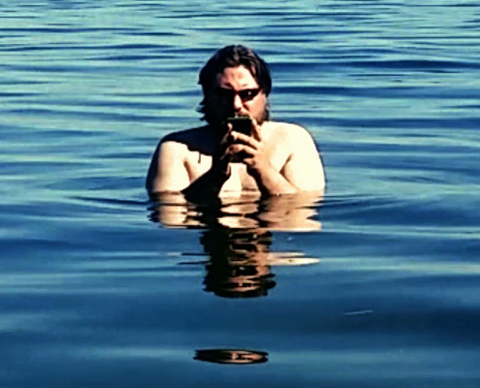

Kuesti FRaun

Kuesti Fraun * 1977 in Deutschland. Freier Filmemacher, Autor und Medienkünstler mehrfach international preisgekrönter Geschichten in Wort, Bild und Ton. Kuesti Fraun, der nur unter seinem Künstlernamen ausstellt, lebt und arbeitet in Düsseldorf. SMARTER USER ist in Bayern mitten im Bodensee entstanden.
Ausstellungen (u.a.): Marler Videokunstpreis 2013 – 60SIFF Islamabad Pakistan 2015 – Nikon European Filmfestival 2015 – Werkschau, Deutscher Pavillon Expo Milano 2015 – NowYouSeeMe! Paris 2015 – Dokka-Festival Karlsruhe 2016 – Designpreis Halle 2017
Smarter User
2016 – Video, Sound – 00'45''
R+B+T: Kuesti Fraun – K+T+S: Chris Brandl – P: mobtik – Mit
Danny Wirsching, Kuesti Fraun
Ein Gebet an die neuen Götter der permanenten Erreichbarkeit.